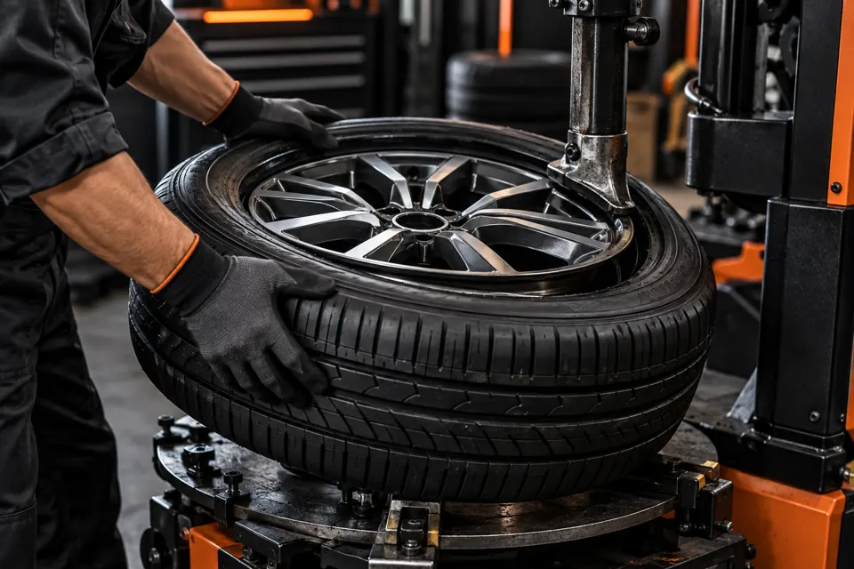
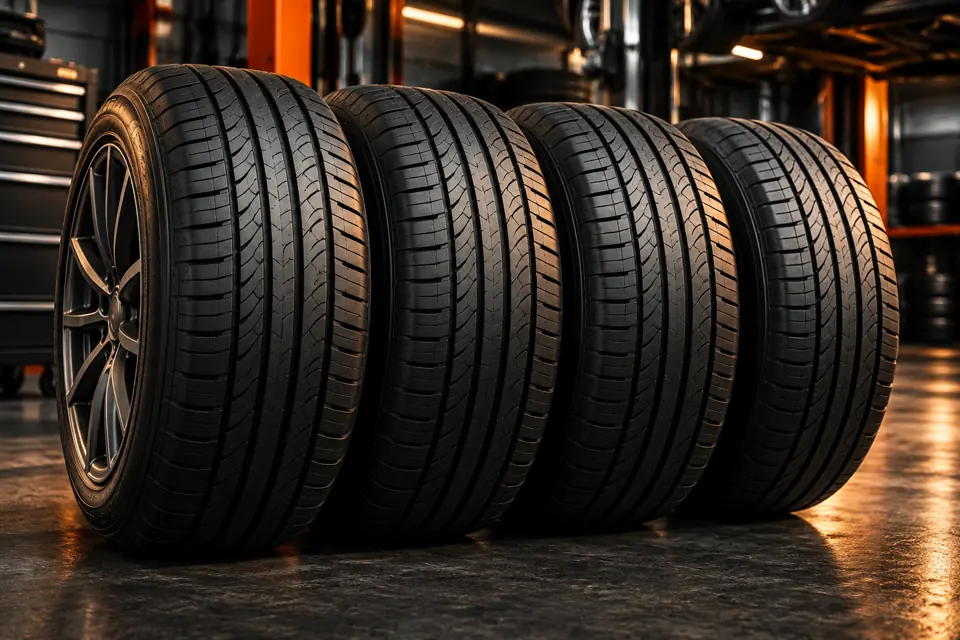
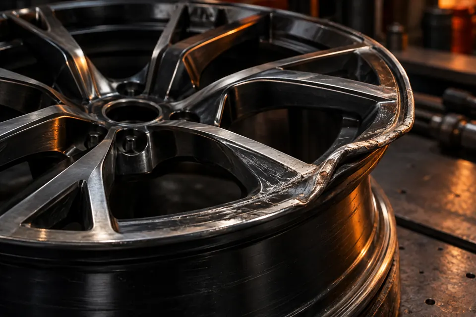
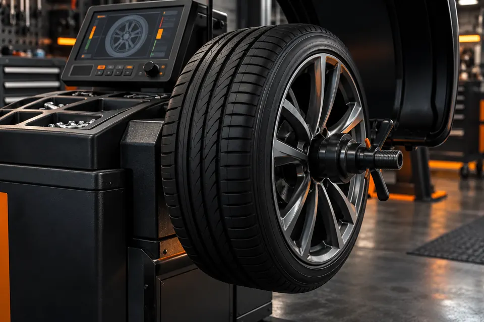
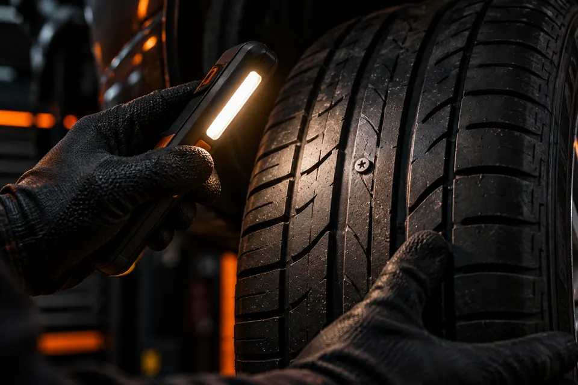
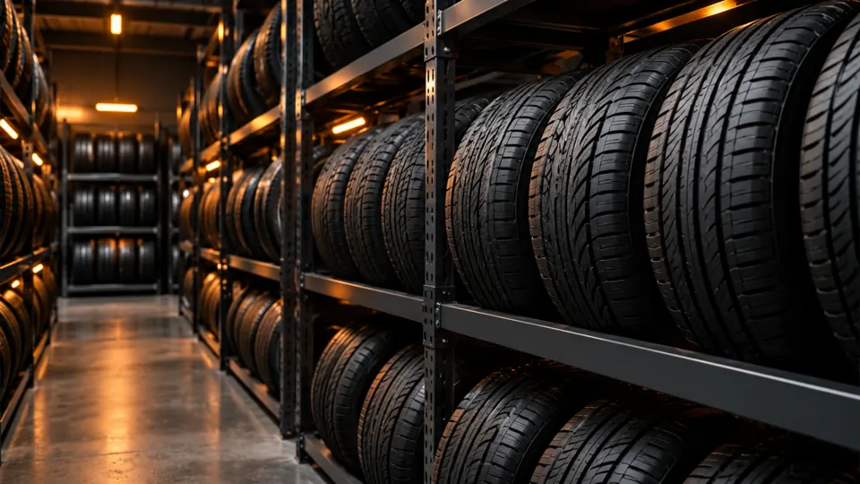
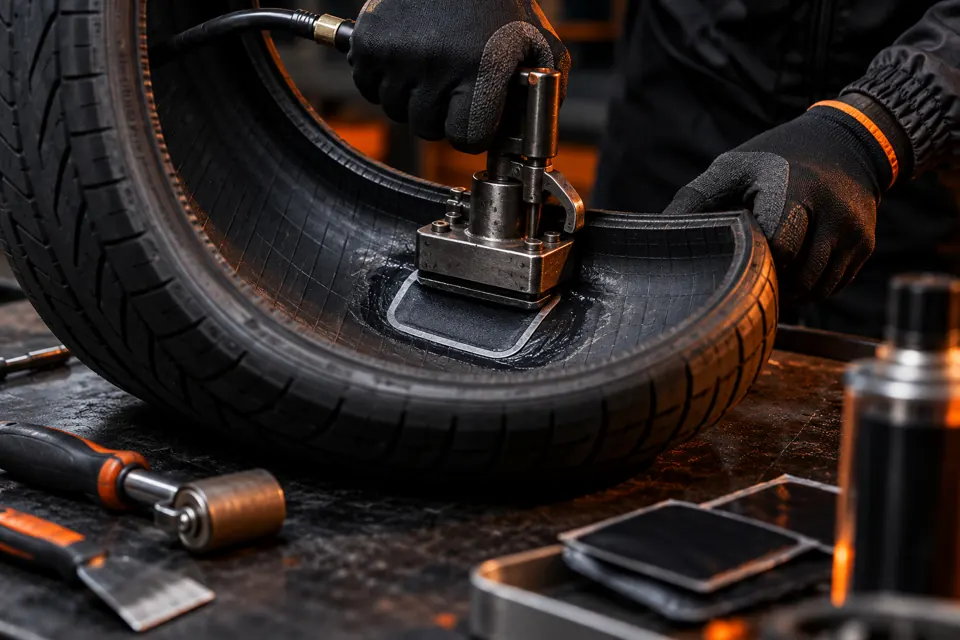

ШИНОМОНТАЖ В ТЮМЕНИ
Шиномонтаж
в Тюмени
Шиномонтаж, балансировка
и правка дисков
Сезонная смена колёс и другие услуги для шин и дисков. Позвоните, чтобы обсудить задачу и договориться о времени.
Тюмень,
ул. Правды, 64А
ул. Правды, 64А
Предварительная
запись по телефону
запись по телефону
Оплата картой,
СБП или наличными
СБП или наличными
С какой задачей приехали?
Найдите свою ситуацию и уточните условия перед визитом.

Сезонная смена шин
Шиномонтаж и балансировка. Согласуйте время по телефону.

Повреждённый диск
Расскажите о повреждении и уточните возможность правки диска.

Нужна балансировка
Балансировка колёс. Состав работ уточните перед визитом.

Спускает колесо
Опишите повреждение и уточните возможность и стоимость работ.


Также в перечне: настройка и установка датчиков давления, порошковая покраска дисков, заправка автокондиционеров. Доступность и условия уточняйте перед визитом.
Перед визитом
Три вопроса для разговора по телефону.
- 1
Согласуйте время
Позвоните и договоритесь о времени.
- 2
Опишите задачу
Назовите авто, размер шин или дисков и что беспокоит.
- 3
Уточните условия
Спросите о составе и стоимости работ.
Отзывы клиентов
Актуальные оценки и отзывы на Яндекс Картах.
На 12.10.2026: 5,0 · 62 оценки · 45 отзывов. Текущие данные — в виджете.
Открыть все отзывыПочему обращаются в Шиномарт?
Предварительная запись
Можно договориться о времени по телефону.
Работы с колёсами
Шиномонтаж, балансировка и правка дисков — доступные направления.
Несколько способов оплаты
Можно оплатить картой, через СБП, по QR или наличными.
Wi-Fi
Доступен Wi-Fi.
Контакты
Расскажите о задаче по телефону или откройте маршрут в Яндекс Картах.